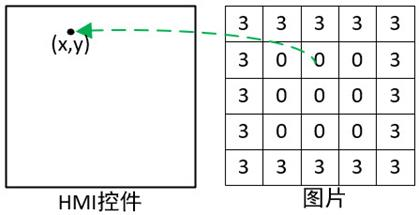

|
类型 |
坐标转换 |
|
描述 |
将图像像素坐标转换到界面HMI控件坐标，转换过程使用了锁存信息，需要锁存信息正确，用于界面交互时的坐标变换 注意：指令应用于坐标数据，请注意与长度数据区分  |
|
语法 |
ZV_POSFROMIMG(latchId,num,tabIdIn,tabIdOut)
参数： latchId：锁存通道号 num：坐标点数量 tabIdIn：存放转换前坐标点的TABLE索引，num个坐标点数据依次为x、y、x、y...... tabIdOut：存放转换后坐标点的TABLE索引 |
|
适用控制器 |
支持ZV功能或者5系列以上的控制器 |
|
例子 |
ZVOBJECT img ZV_LATCHSETSIZE(0,553,155) '设置锁存0通道的宽高：553*155 ZV_ImgRead(img,"logo.png",0) '以原图像格式读取图像 ZV_LATCH(img,0)
TABLE(0,100,50) 'TABLE(0),TABLE(1)存放图像坐标(100,50) ZV_POSFROMIMG(0,1,0,10) '转换得到的控件坐标存放在TABLE(10),TABLE(11) |